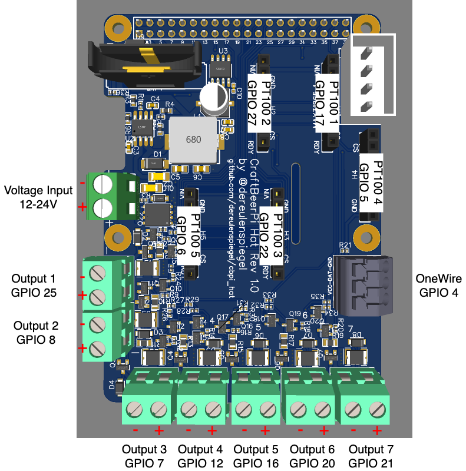

Introduction
Hardware Setup
The board itself has been designed with ease of use in mind. However certain things need to be considered.

Power
First of all please use a proper power supply to power the board. In theory every output can provide up to 1 amp and the Rasperry Pi could draw up to 3 amp. So in total the board might require up to 10 amp to be provided by the PSU. Please calculate your actual power requirements and provide proper fusing on the power input as currently only the outputs have fuses but not the overall board itself.
When deciding for the voltage it is best to consider what voltage you need on the outputs as the outputs will directly output the input voltage. The hat will convert every input voltage between 12V and 24V into 5V for the Raspberry Pi. There is no need to power the Raspberry Pi through USB. So please do not power the Raspberry Pi via USB when using the hat, as this might damage the Raspberry Pi and/or the hat.
Polarity
Even though the board has reverse voltage protection on its input, polarity is important for
successful operation. When looking at the front of a screw terminal the negative side is always left
and the positive side is always right. This is true for the input connector and all output screw
terminals. There are also markings + and - next to connectors if there is space for that on the
top side. On the bottom side the polarity and numbering of all connectors is marked in full.
MAX31865 for PT100/PT1000
On the board are five slots for MAX31865 modules like the ones from Adafruit. Slots 1,2,3 and 5 are oriented in the same direction with the MAX31865 modules top side facing to the left. Slot 4 is reversed for space saving reasons and is therefore facing to the right.
In CraftBeerPi you need to configure for each module you have plugged in and want to use the correct chip enable. The GPIOs used as chip enable for each slot are marked in the overview picture, but here is additionally a handy table:
| Module # | GPIO CS |
|---|---|
| 1 | 17 |
| 2 | 27 |
| 3 | 22 |
| 4 | 5 |
| 5 | 6 |
RTC
For the RTC to properly work you need to insert a CR2032 battery into the battery holder. The polarity is marked on the board.
Outputs
The board has 7 different powered outputs to drive GPIO actors. Every output outputs the input voltage with up to 1 amp to drive SSRs, relays, solenoids etc. For loads like relays and solenoids the polarity should not matter. For other loads the polarity is the same as on the input (left negative side, right positive side).
All outputs are inverted, meaning that they are active when the GPIO is driven low and vice versa!
Ensure that you select "Inverted" "Yes" when configuring the GPIO actor in CraftBeerPi!
Software setup
To properly operate this board and make use of all its features a few things need to be considered on the software side as well.
RTC
The RTC on this board is a DS3231 and well supported by all Linux kernels. To make use of the RTC
you need to enable I2C and use the proper devive tree overlay to let the kernel know about the
availability of the RTC. To do this simply add the lines to the config.txt of your Raspberry Pi
installation
dtparam=i2c_arm=on
dtoverlay=i2c-rtc,ds3231
OneWire
OneWire support needs to be enabled as well for the kernel to be usable by userland applicartions like
CraftBeerPi. The OneWire data line is connected to GPIO4 on the Raspberry Pi. To enable OneWire support
simply add the following line to your config.txt
dtoverlay=w1-gpio,gpiopin=4
SPI (MAX31865)
The MAX31865 modules are connected via SPI on the bus SPI0 on the Raspberry Pi. To enable SPI support
add the following lines to your config.txt
dtparam=spi=on
dtoverlay=spi0-0cs
We need to disable the chip enable pins of the SPI0 bus, because they would only support 2 devices and this board supports up to 5 MAX31865. The GPIO formerly used us chip enable are used to control output 2 and 3.
When configuring the MAX31865 modules in CraftBeerPi you need to specify the chip enable pin for each module. The following table maps the numbered module slot to the correct GPIO serving as the chip enable pin:
| Module # | GPIO CS |
|---|---|
| 1 | 17 |
| 2 | 27 |
| 3 | 22 |
| 4 | 5 |
| 5 | 6 |
GPIO
The digital outputs are controlled by GPIO pins. Please note that the outputs are inverted, meaning that if
the GPIO is high the output is disabled and vice versa. To bring the GPIO pins controlling the outputs as soon
as possible on a defined high state and therefore disabling the outputs during boot please add the following
line to your config.txt
gpio=25,7,8,12,16,20,21=op,dh
When configuring GPIO actors in CraftBeerPi please ensure that you specify "Yes" for the field "Inverted"! The following table maps the GPIO pin numbers to the numbered outputs
| Output # | GPIO |
|---|---|
| 1 | 25 |
| 2 | 8 |
| 3 | 7 |
| 4 | 12 |
| 5 | 16 |
| 6 | 20 |
| 7 | 21 |